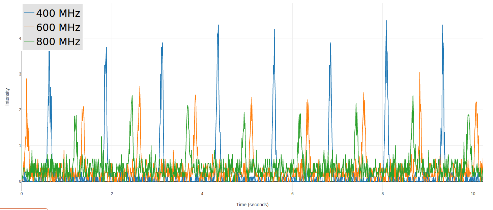
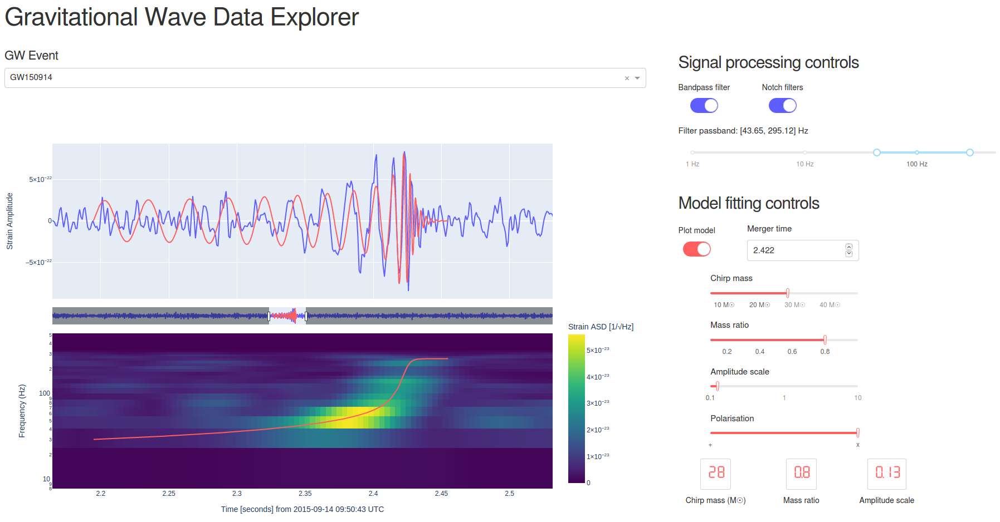

I am presently the lecturer for OLET1638 - Astronomy: from stars to black holes at the University of Sydney. Students may find all relevant course material through Canvas. The weekly tutorials for this unit provide students with an opportunity to explore astronomical data. Web tools for use in some of these tutorials is also available below.
In this tutorial, students explore the properties of pulsars using simulated observations from a radio telescope. These simulated observations are available here.
The data were simulated using Project CLEA software, and may also be used to complete the CLEA "Radio Astronomy of Pulsars" exercise, on which this tutorial is based.
In this tutorial, students explore real data from the Laser Interferometer Gravitational-Wave Observatory (LIGO) and search for signals from black hole mergers. The data is accessed through a dashboard app, the Gravitational Wave Data Explorer, which allows students to do some simple signal processing to reveal the gravitational wave signal hidden in the raw LIGO data, and to fit a simplified BH-BH merger model.
This app displays data from LIGO downloaded from the Gravitational Wave Open Science Center. The model waveforms were simulated using the Riroriro Python package by van Zeist, Stevance, & Eldridge (Links to: JOSS paper, github repo), which is based upon the methods of Buskirk & Babiuc-Hamilton (2019). Source code for the app is available from this github repository.
Last updated: